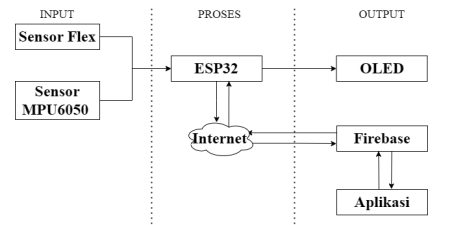
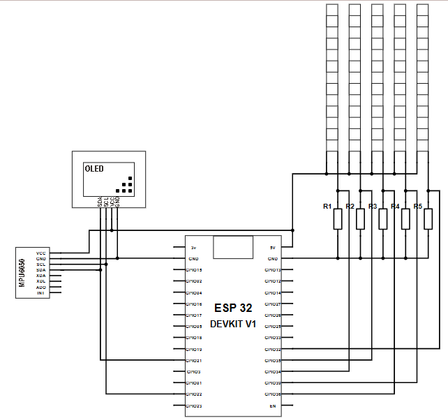
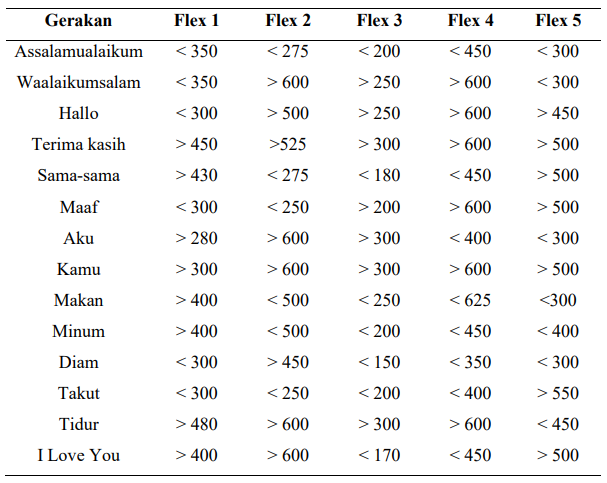
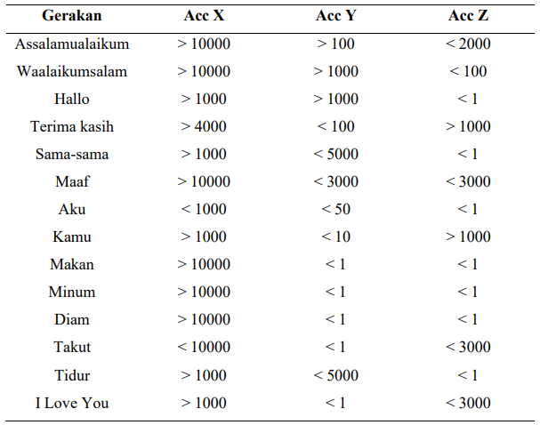

This Final Project designs a Smart Glove as an Android-based sign language interpreter to help communication between deaf people and people who do not understand sign language. This system uses ESP32 as a microcontroller, flex sensor, and MPU6050 sensor to detect finger movement and hand position. The sensor data is processed and sent to the Android application via Firebase Realtime Database for translation into text. The components of the device are placed on a fabric glove for ease of use and portability. The Android app, developed with Android Studio, has various features such as registration, login, conversation, and sign language learning. Users can view the sign language translation in real-time and send reply messages displayed on the OLED in the glove.
The work process of the tool is divided into 3 parts, namely input, process and output. In the input section there is a flex sensor to detect the curves of the fingers and an MPU6050 sensor to detect the rotation and shift of the hand which is connected to the ESP32 module. In the process section consists of ESP32 which is connected to the internet via WiFi. The output section consists of OLED that will display the reply text from the application, and the Android application that is used to receive sign language translation data in the form of text and voice. The tool and android application must be connected to the internet network to be able to work properly.
The realisation of the sign language translator is by connecting the components with the ESP32 microcontroller. Connecting the components with the ESP32 is done by combining the component pins to the microcontroller pins. The schematic of the sign language translator circuit as a whole can be seen in the following figure.
The parameters for the five flex sensors used to define hand movements were obtained. The following is the data taken from each sensor when the finger is moved to form the fourteen basic gestures of sign language based on the Indonesian Sign Language (SIBI) standard.
MPU6050 is used to detect hand gestures. Several size parameters were obtained for each movement. The parameters are the x, y, and z axes obtained from the MPU6050 accelerator sensor.
Tap the button to download code program
Download FileTap the button to download application
Download FileSign language word testing was conducted with five trials for each word. The test results show the accuracy level of Smart Gloved in translating sign language gestures into proper text. Overall Overall, the average accuracy reached 87.14%. The percentage of success is calculated based on the number of successful tests compared to the total number of trials conducted for each word.